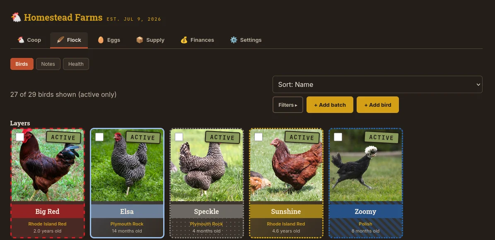

Track your flock.
Birds, eggs, income and expenses, supply inventory, hatching, and bedding — running the moment you open it, with nothing to sign up for. Your data stays on your own device unless you choose to sync it somewhere.

Everything a working flock actually generates
Two ways to use it — pick either, or switch later
Just open it
Tap "Open the app," choose local use, and start entering data immediately. Everything lives in your own browser, on your own device — nothing is sent anywhere. Works offline once it's loaded, and can be installed like a real app on desktop or Android for its own icon and window.
Export a backup anytime, from a menu right in the app. Switch to a synced server later without losing anything you've already entered.
Sync it across devices
Run your own copy on a home server or NAS with a single Docker command, then connect any device to it with an invite code. Data lives on your server, syncs automatically in the background, and keeps working offline in between — changes push out the next time a connection's available.
Nobody's server but your own. Self-hosting is free, and covered below.
A direct-download Android app, if you'd rather not use the browser
This is the same app, wrapped as a standalone Android package (built with Bubblewrap) instead of something you install from a browser tab. It points at thecoopledger.com just like the web app does, so it works the same way — local-only or synced, your choice.
Since it isn't distributed through the Play Store, Android will show an "unknown source" warning during install — that's expected for any app installed this way, not a sign something's wrong. You'll need to allow it explicitly to continue. Google Play, F-Droid, and other stores are planned for a more familiar install path down the road.
Runs anywhere Docker does
A Raspberry Pi, a NAS, an old laptop — anything that can run a container. One file, one command.
services:
coop-ledger:
image: ghcr.io/tjusczak/thecoopledger:latest
container_name: coop-ledger
ports:
- "8000:8000"
volumes:
- ./data:/data
restart: unless-stoppeddocker compose up -dThat's it — visit http://<your-server-ip>:8000, grab the invite code from the container's logs, and you're in. Full setup instructions, backup guidance, and the source itself are on GitHub.
Committed to Free & Open Source
This is a solo project, built and maintained in my free time. There are no subscriptions or upfront costs required. But if it's saved you a spreadsheet or two, and you're wanting to help support the project — every little bit genuinely helps fund what's next.